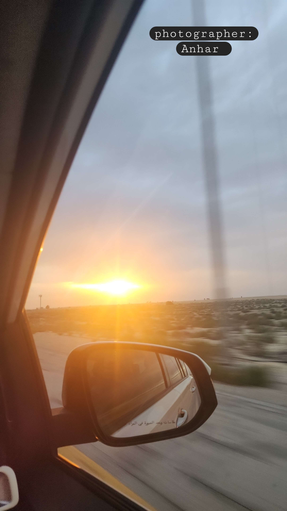
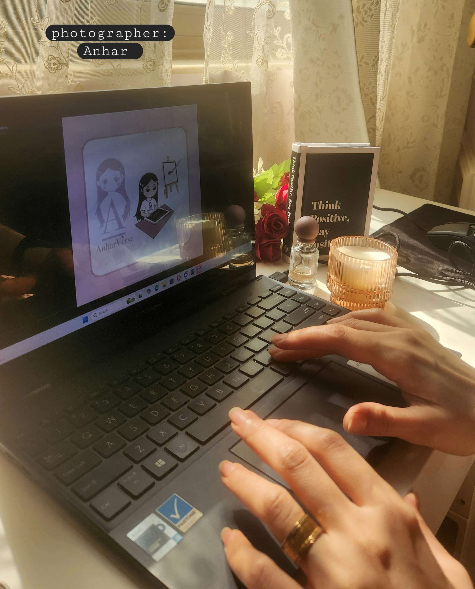
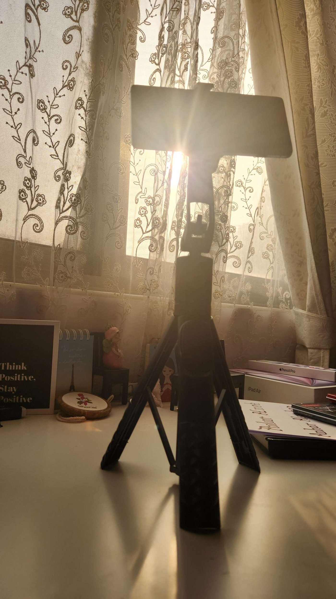

الرؤية

أسعى إلى بناء مشروعٍ نافعٍ يقوم على الأمل،
ويترك أثرًا يتجاوز الأهداف السريعة والعابرة.
في عالم أنهار، أؤمن أن الاستدامة هي جوهر النجاح،
وأن المشاريع التي تُبنى على المعنى والوعي،
هي وحدها القادرة على البقاء والنمو والتأثير.
الإبداع بالنسبة لنا ليس ترفًا بصريًا،
بل وسيلة لإعادة اكتشاف الذات،
ولتجسيد الرحلة الإنسانية عبر القصة، والفكرة، والتصميم.
ما نعمل عليه الآن

نعمل على بناء مشروعٍ تعليميٍ وإلهاميٍّ
يجمع بين تطوير الذات وتعليم اللغة الإنجليزية عبر القصة،
ليُقدّم تجربةً مختلفة تُلهم من يتعلم أن يفهم، لا أن يحفظ؛
وأن ينمو من الداخل، لا بمجرد الإنجاز الخارجي.
هذا المشروع ما زال في طور التشكّل،
تُكتب كلماته وتُرسم ملامحه على مهل،
لينضج في وقته المناسب،
حين يكون قادرًا على الوصول الحقيقي،
وحمل الأثر الذي من أجله وُجد.
رؤية الأعمال المستقبلية

ما بين خيال نهيرا ووعي آنا،
تنمو أفكارٌ تحمل رسالة أعمق.
قصص، ورسومات، ومشاريع تعليمية
تلتقي فيها اللغة مع المعنى،
والتعلّم مع تطوير الذات.
كل مشروعٍ قادم هو فصلٌ جديد من الحكاية،
يمضي على وتيرةٍ واحدة:
أن يتحوّل الإلهام إلى أثرٍ يبقى.